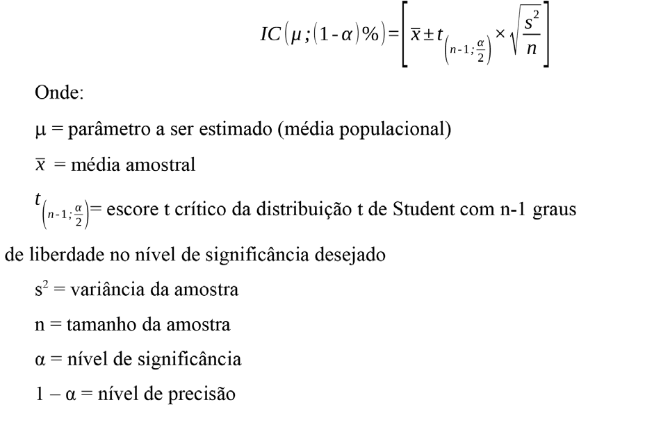
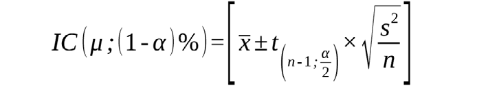
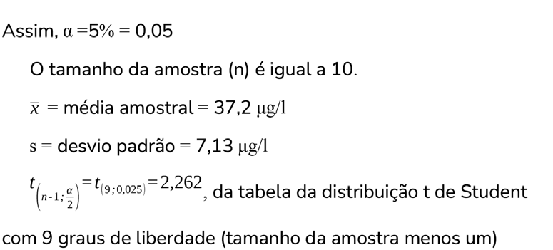
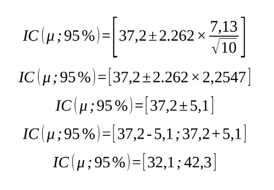

Módulo 1 | Aula 3
Estatística Avançada
Intervalo de confiança
A estimação é o processo que usa os resultados extraídos da amostra para produzir inferências sobre a população da qual a amostra foi extraída aleatoriamente.
A estimação pode ocorrer de forma pontual ou intervalar. Voltando ao exemplo, a estimativa pontual é a média calculada na amostra e a intervalar, é o intervalo de confiança para a média populacional de eleitores brasileiros.
Um intervalo de confiança incorpora à estimativa pontual do parâmetro informações a respeito de sua variabilidade e o grau de confiança associado à essa estimativa.
A estimação por intervalo de confiança consiste no estabelecimento de limites inferior e superior para o parâmetro que se deseja estimar.
Necessário, portanto, associar um grau de “risco (ou erro)” denominado nível de significância, que é uma probabilidade (variando entre zero e um). Assim, a precisão esperada do intervalo de confiança é obtida pelo complementar do nível de significância, que é o grau de confiança (um menos o nível de significância).
Dizemos que o intervalo tem, por exemplo, 95% de confiança de conter o verdadeiro valor da média populacional, ou seja, estamos 95% confiantes de que esse intervalo contenha a média verdadeira. E não que a média tem 95% de chance ou probabilidade de estar no intervalo.
No caso da média populacional, o intervalo de confiança é calculado da seguinte maneira.

Para mais informações sobre o cálculo do intervalo de confiança consultar, por exemplo, o livro do Barbetta (2002) ou qualquer outro livro de Estatística que contemple esse conteúdo
Vejamos um exemplo sobre intervalo de confiança.
Considere uma amostra de 10 bebês selecionada de uma população de bebês que recebe antiácidos com presença de alumínio, que são usados frequentemente para tratar distúrbios digestivos. O nível médio de alumínio no plasma para a amostra dos 10 bebês é 37,2 μg/l e o desvio-padrão é 7,13 μg/l. Calcule um intervalo com 95% de confiança para a média populacional.

Como grau de confiança de 95% temos que o nível de significância é de 5% (100% - 95%).

Então, o intervalo de confiança para a média do nível de alumínio nos 10 bebês é:

Dizemos que estamos 95% confiantes de que a média populacional (concentração de alumínio no plasma em bebês) pertence ao intervalo [32,1; 42,3].